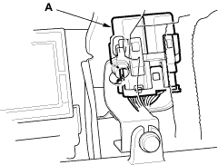
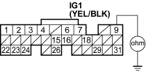
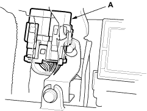
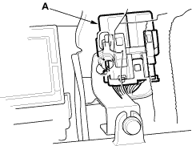

- Remove the PGM-FI main relay 1 (A).
LHD model:
RHD model:

- Check for continuity between ECM connector terminal E9 and body ground.
ECM CONNECTOR E (31P)

Wire side of female terminals
Is there continuity?
YES - Repair short in the wire between the No. 17 FUEL PUMP (15A) fuse and the ECM (E9), or the No. 17 FUEL PUMP (15 A) fuse and the PGM-FI main relay 2. Also replace the No. 17 FUEL PUMP (15A) fuse. 
NO - Go to step 35.
- Remove the rear seat cushion, refer to the 2001 Civic 3-door Shop Manual (see page 20-40).

- Remove the access panel from the floor.
- Disconnect the fuel pump 5P connector.
- Check for continuity between the fuel pump 5P connector terminal No. 5 and body ground.
FUEL PUMP 5P CONNECTOR

Wire side of female terminals
Is there continuity?
YES - Repair short in the wire between the fuel pump and the PGM-FI main relay 2. Also replace the No. 17 FUEL PUMP (15A) fuse.
NO - Go to step 39.
- Reinstall the PGM-FI main relay 2 (A).
LHD model:

RHD model:
